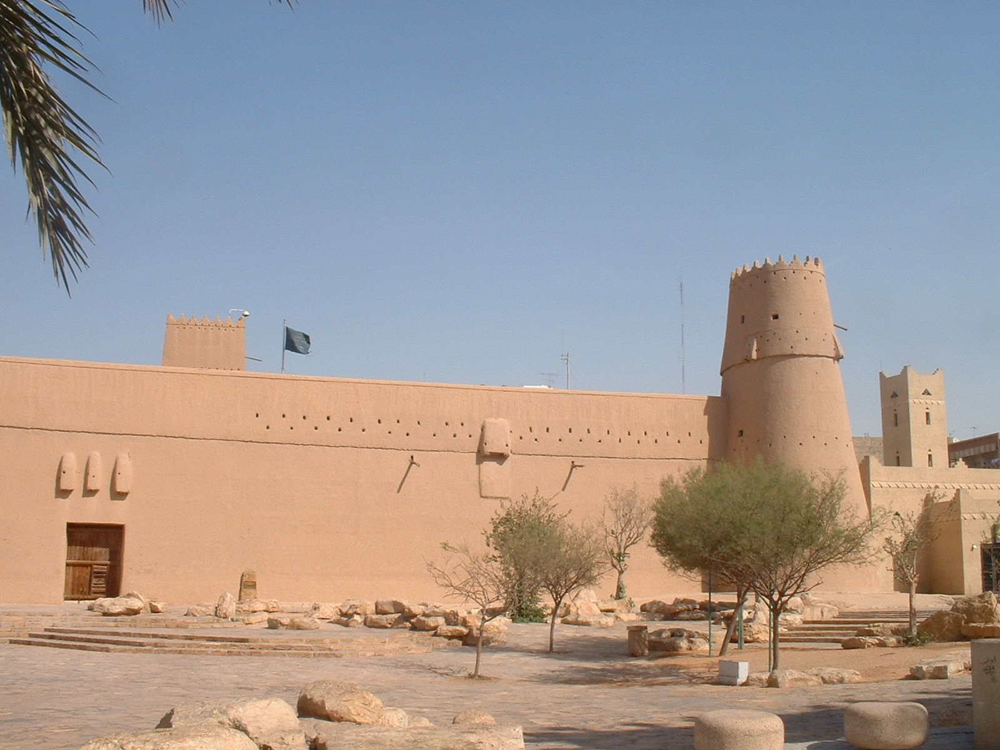
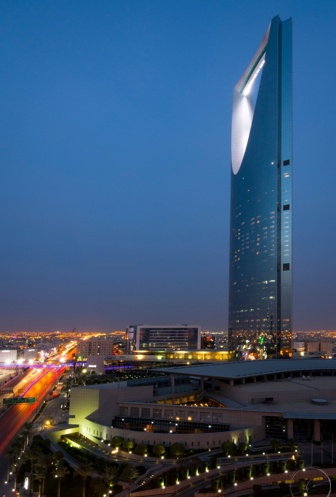

BIENVENUE A RIYAD
Riyad, capitale et principal centre financier d'Arabie saoudite .les
monuments du quartier des affaires incluent le kingdom centre et la tour Al Faisaliah
centre.Dans le quartier historique de Deira ,
la citadelle de Masmak fut le lieu du raid de 1902 qui a donné le contrôle de Riyad aux Saoudiens.
Le fort Masmak
est un fort situé dans le centre historique de Riyad, en Arabie Saoudite. Fait d'argile et de terre crue,
il comprend des murs épais ainsi que quatre miradors. Cet édifice joue un rôle important dans la bataille de Riyad
du 14 janvier 1902.

Le Kingdom Centre
est le second plus haut gratte-ciel d'Arabie saoudite après l'Abraj Al Bait Towers. Achevé en 2002, il se situe
dans la zone d'affaires de Riyad, entre la King Fahd Road, la principale artère de la ville, et la Olaya Road.
